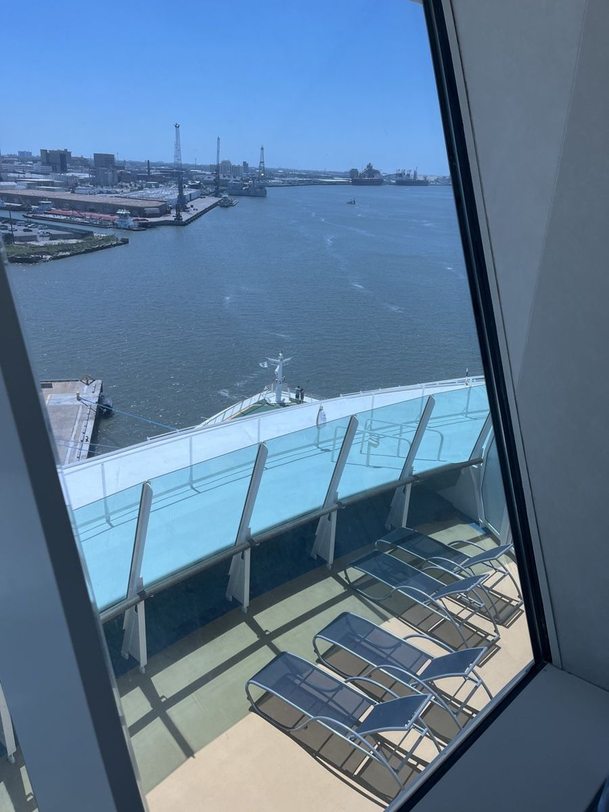
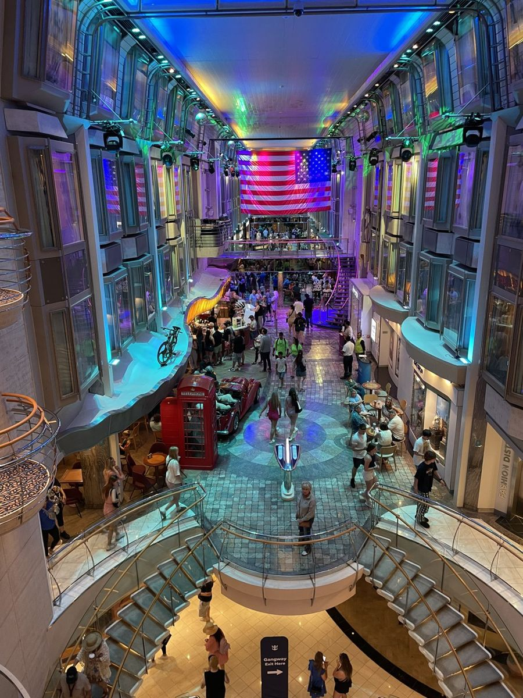
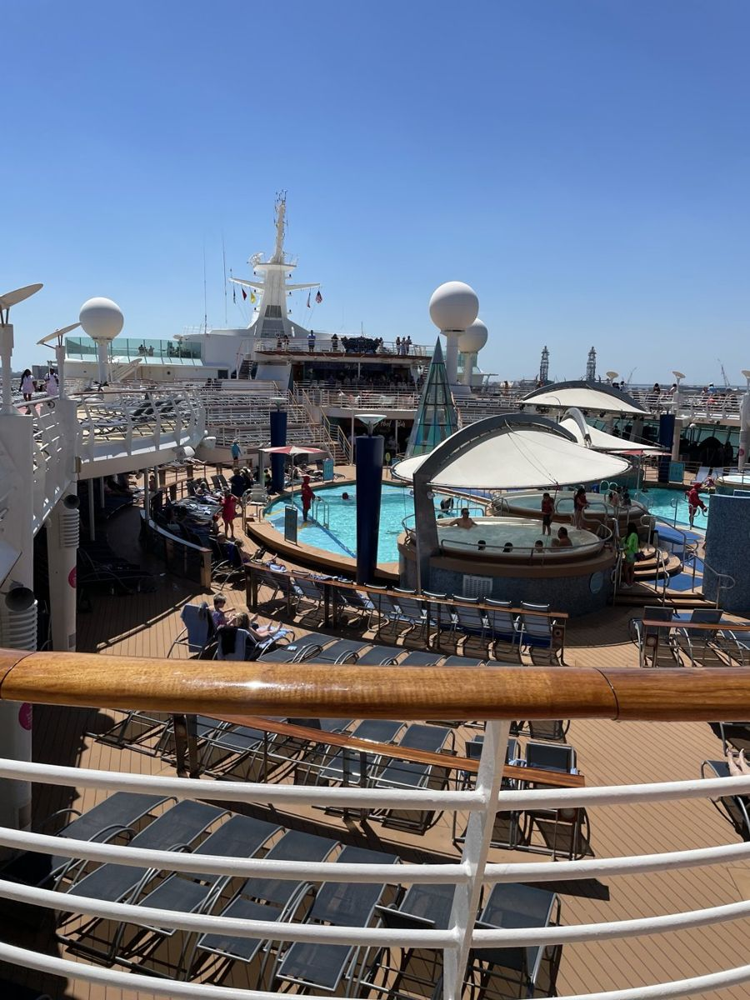
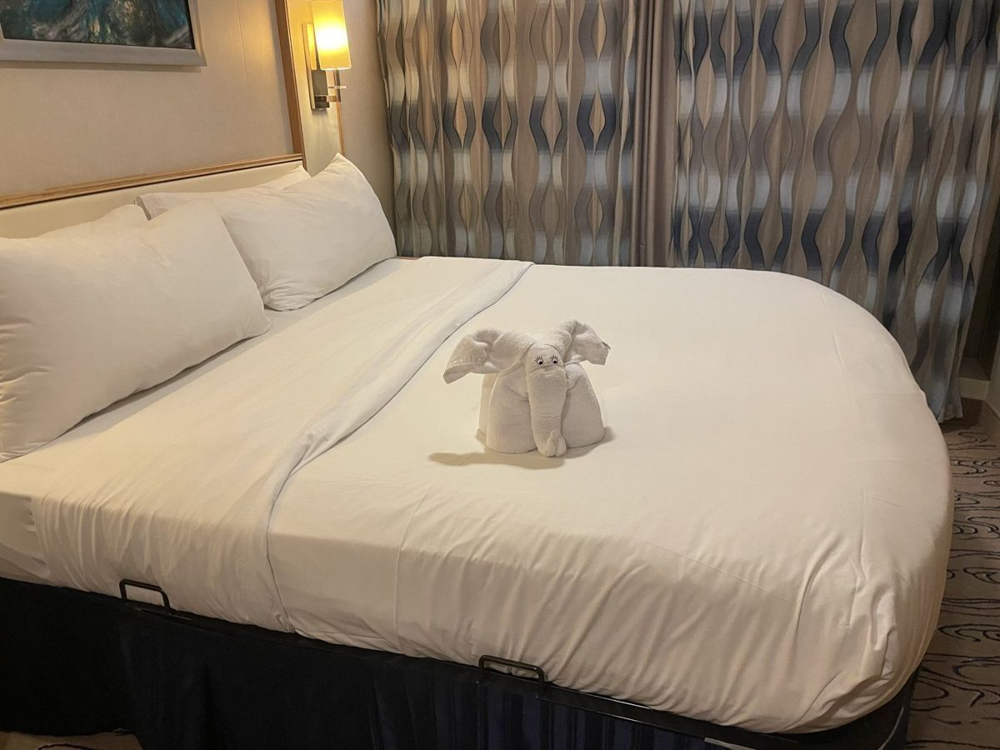
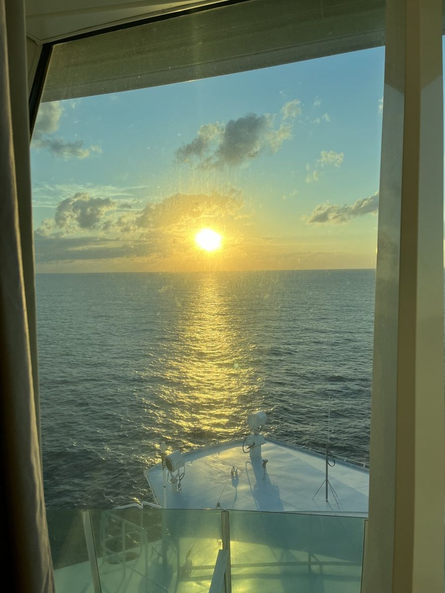
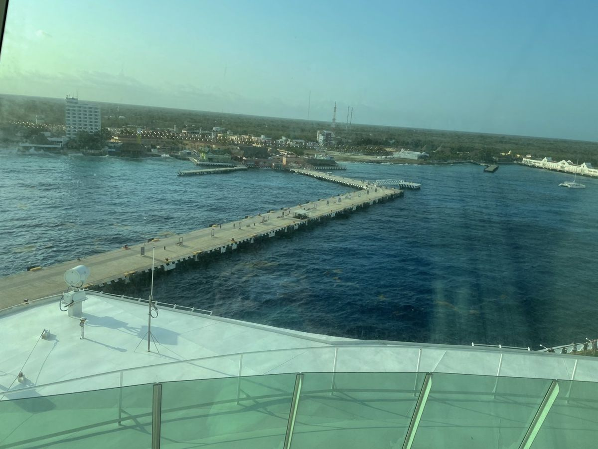
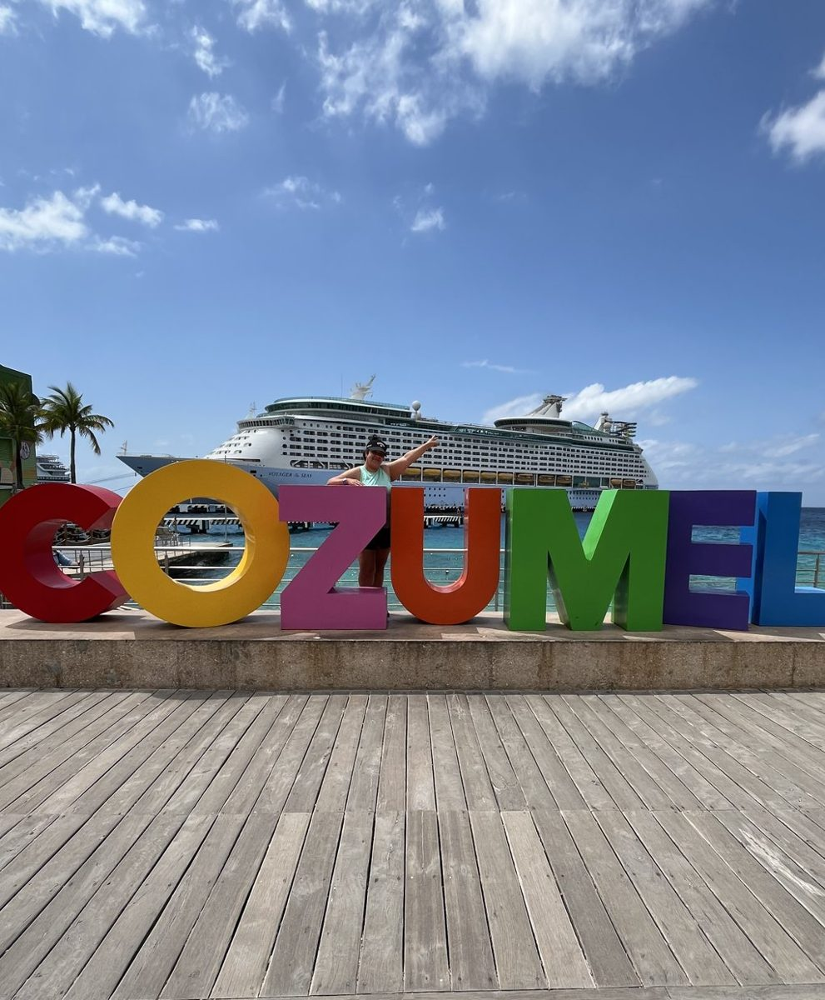
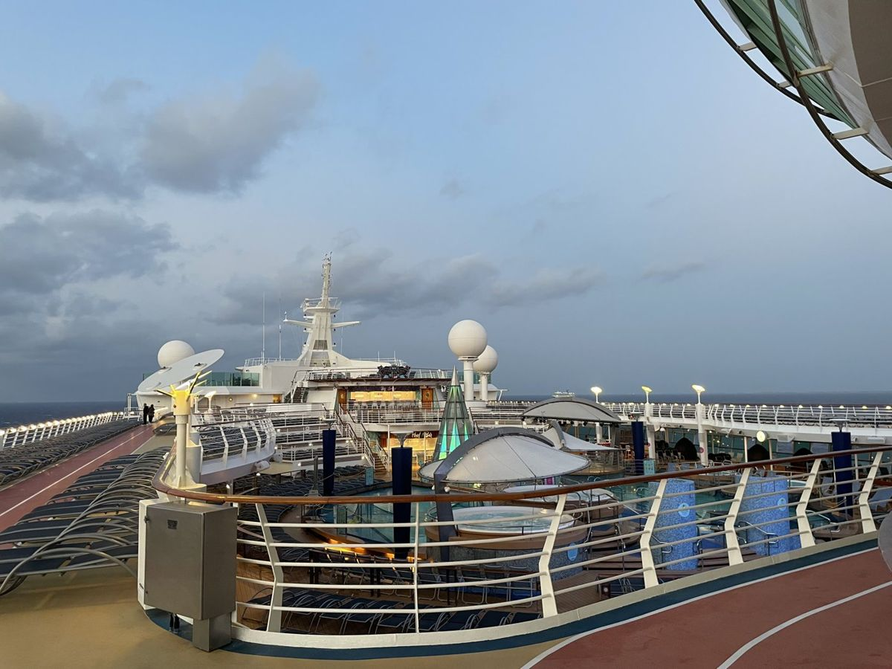
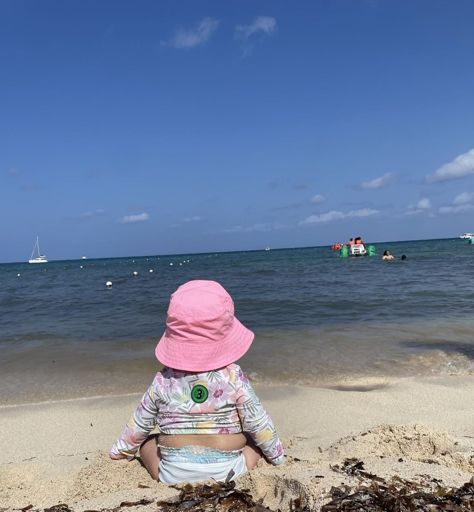
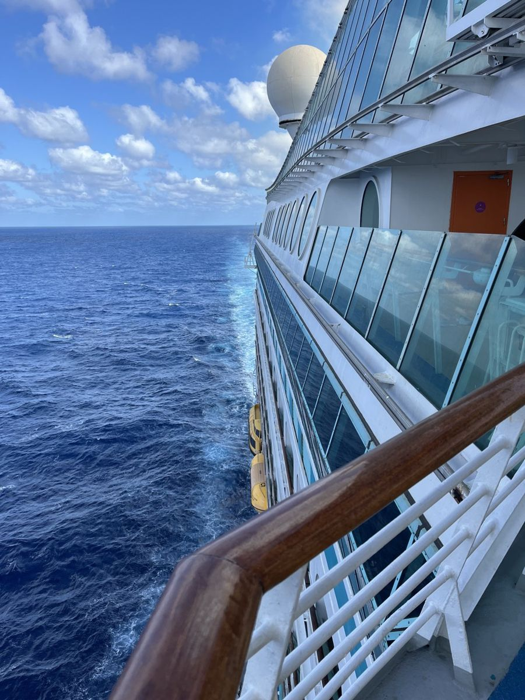

Royal Caribbean Voyager of the Seas: Galveston to Cozumel with an 8-Month-Old (April 2024)
In April 2024 we sailed Royal Caribbean’s Voyager of the Seas from Galveston, Texas, to Cozumel, Mexico, with our daughter. We kept few notes, so this is a short, honest report of what we remember, backed by our booking documents and photos. It is also an older sailing, so check current itineraries, rules and prices before you book.
The itinerary
Royal Caribbean notes that itineraries may change for weather and other conditions.
Embarkation was easy
Boarding in Galveston was easy for us. We had a later onboard time because the ship sailed at 4:00 PM. Our booking documents asked for online check-in no later than three days before sailing and said pier check-in had to be completed at least 90 minutes before departure, so follow the current instructions in your own booking.
The stateroom
We booked a Spacious Panoramic Ocean View stateroom on Deck 12. Our booking listed two lower twin beds converted to a queen. We also requested a play yard in the cabin for our daughter, which was noted on our booking under special services. If you are traveling with a baby, that is worth asking for when you book.
Dinner and the buffet
Our booking listed an 8:00 PM dining time. Dinner reservation times were available and assigned to us, so we had the option of a nicer sit-down dinner, and the ship also had buffet options. We did both.
Around the ship
There was plenty of shopping onboard. The Royal Promenade is the ship’s indoor main street.
Cozumel beach day
In Cozumel we spent the day at Playa Mía Grand Beach Park. It had a pool and a lunch buffet included. We booked it once we were onboard. Viator lists Playa Mía Grand Beach Park day passes if you want to book ahead. If you want something similar, look for a beach club package that lists the pool and lunch as included, and confirm what is included before you pay.
Photos
All photos are ours, from April 11–14, 2024.




















Cozumel excursions to consider
We booked our beach day onboard, but most of these can be reserved ahead of time. A few listings on Viator for families: Mr. Sanchos beach club day pass, Paradise Beach day pass, catamaran and turtle sanctuary, and the Atlantis Submarine expedition. See the full list in our Cozumel shore excursions guide. Check age limits and your all-aboard time before booking.
More cruise reviews
For comparison, see our Disney Destiny review and our Disney Fantasy vs. Wish guide.